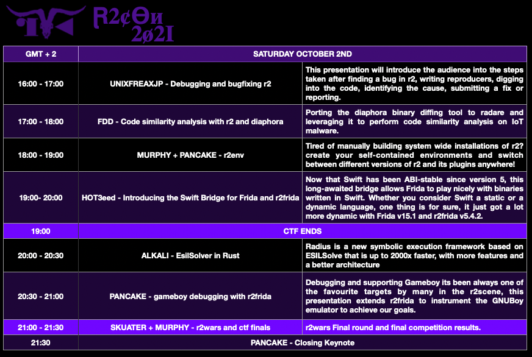

## r2con2021 - witchcraft edition ##
a. ./
'#. .=.______ _/#
`&\. __._.=##o. /#########o._ _.oO##'
T##o._ ____.:############. /#################@oooooO###/
'Q##################P" '"q#####. .#####P" `""O#########&9"'
"&#########P"' '####. |####/ ''"""'
''""""' I###\ .d###7
.:#&:._ T======--- \&##&b |####/ .x|
/#####L"\ |#######| \##&"='&##/ .=###|
(#######| \|#######| _>&#####&<_ _.=######|
'&######" '|#######| /&^#######^&\ _.=##########|
`":&#"' |#######| |( \#####/ )| _.d#############|
|#######| /&o.|###|.o&\ "Q#############|
|#######| '"\!#####!/'" '"###########|
|#######| ||#####|| '"########|
|#######| <(#"#"#)> '"#####|
___|#######|_ \b V d/ 'Y##|
"""""""""""""' '!V"V!' '!
## Recordings
* Videos: youtube channel
* Slides: slides
## Presentation
Hey radare friends, 2020 is over, it's time for the vaccination and recovery!
So here we go again. Welcome to the 6th annual sacred event of r2con!
r2con is the annual conference of radare2, aims to gather all of the r2 users
of this planet (or other planets too in the future), where developers come to
enjoy three full days of binary hacking know-how, education, discussion,
experiments, competitions and coding, while we all can have fun and drink beers,
sake or ratafia (safely at home).
Like in the last year, the event will be fully online and there's no access
restriction or ticket price.
* schedule - Conference schedule
* r2wars - the codewars-style assembly game on top of r2
* CTF - capture the flag reversing challenges to solve with r2
* Conference Contributors - Take time to say thanks to the people make this happen.
## Schedule (GMT+2)
## Thursday (Sep30)
## Friday (Oct1)
## Saturday (Oct2)

## Chiptune (October 2nd: Saturday 22:00)
At the end of the conference, we will hold our traditional chiptune concert by:
## CTF
Website: ctf.radare.org
Registration will be opened at 12:00 (GMT+2) time on Thursday September 30th.
The R2Con CTF is a Jeopardy CaptureTheFlag style competition that must be solved with r2.
You are given several questions, tasks & challenges related to different categories of
RE which may be solved using radare2. Players get points by solving them. Using hints
to solve the challenges lowers the score.
The CTF last from September 30th 16:15 (GMT+2) to October 2nd 19:00 (GMT+2)
- Individual CTF.
- All level challenges basic, intermediate & difficult.
- The CTF at r2con is about reversing. You may encounter crypto, mobile and others.
- All challenges should be solved using radare2, a write up will be requested!
- There will be prizes for the winner.
- All winners will be disclosed during the closing talk of the con
- Updates will be informed on the official Discord and Telegram channels.
Join the telegram channel here
Join the #ctf discord channel here
## R2WARS
Join the telegram channel here to contact with skuater and upload your bot for the competition!
- Training rounds are held Thursday & Friday at 21:00 GMT+2
- Knockout final round is Saturday at 21:00 GMT+2
- There will be prizes for the winner.
- All winners will be disclosed during the closing talk of the con
This game is inspired by CoreWar, but running on top of radare2's ESIL emulation.
To win please submit your bots written in assembly (this time we will accept x86-32, arm64,
arm32, mips) which will run in the same memory space trying to make the other bot crash by
corrupting their memory.
To learn more check out the following links:
* https://github.com/radareorg/r2wars
* https://www.youtube.com/results?search_query=r2wars
* https://github.com/radare/radare2/labels/r2wars
Conference contributors
Speakers
* Keynote / Non Mainstream Architectures / dev Training / r2env @trufae
* Workshop: Analysis of Virtualization-based Obfuscation Tim Blazytko
* r2frida Kung Fu / r2env Alex Soler (Murphy)
* Adventures in Dildo Hacking @CaptBanana
* Qiling+r2: Details @LAZYMIO
* Feeding Neural Networks with Reversed @sha0coder
* Last bits on Frida @oleavr
* Flipping malware with flip.re @Lars
* Debugging and bugfixing r2 @unixfreaxjp
* Code similarity analysis with r2 and diaphora @FernandoDoming
* Introducing the Swift Bridge for Frida and r2frida @hot3eed
* EsilSolver in Rust @alkalinesec
Capture The Flag
* Alex Soler @as0ler
* Mario Vilas @Mario_Vilas
* Oriol Castejon @foolisses
* Arnau Gamez @arnaugamez
* Pancake @trufae
* Sylvain @Pelissier_S
r2wars Tournament @skuater @pancake
See you soon in r2land!
Chiptune artists
Delivering live music to your ears made with <3, GameBoys, C64 and amiga computers
* sokolov
* vaultkid
* 4Dboy
* havocCc
* wofs
* 3D63
--r2con2021